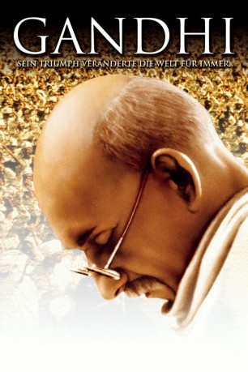
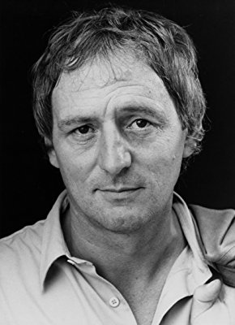

#108 Gandhi
Auszeichnungen: 8 Oscars gewonnen für 3 Oscars nominiert 5 GoldenGlobes gewonnen 5 BAFTA-Awards gewonnen
 
 IMDB-Wertung: 8.1 / 10
IMDB-Wertung: 8.1 / 10  IMDB-TOP-Platzierung: 230
IMDB-TOP-Platzierung: 230  Metascore: 79
Metascore: 79 
Nur ein Mann konnte das britische Empire bezwingen und seinem Land die Unabhängigkeit geben. Sein Ziel war die Freiheit, sein Weg die Gewaltlosigkeit und seine Waffe die Menschlichkeit. Richard Attenboroughs Film beschreibt das Leben Gandhis - einer der größten Persönlichkeiten des 20. Jahrhunderts. Gandhi (Ben Kingsley) geht 1893 als Rechtsanwalt nach Südafrika, um die dort lebenden Inder gegen die strikten Apartheidsgesetze zu vereinen. Er praktiziert dort zum ersten Mal den passiven, gewaltlosen Widerstand, der später zum Kennzeichen seines Freiheitskampfes gegen die Briten wird. Ab 1915 lebt er dann wieder in Indien und verfolgt nur ein Ziel: Indiens Unabhängigkeit vom britischen Empire. Aber mehr als 30 mühsame Jahre vergehen, bis sein Traum wahr wird und Indien 1947 die Unabhängigkeit erhält.
Jahr: 1982
Dauer: 191 Minuten
FSK: 12
Land: England Studio: Sony Pictures Home EntertainmentTonspuren:
Untertitel: Deutsch,
Auflösung: 1080p (1920×816) Größe: 15872 MB
Genre: Biographie, Drama, Geschichte
Regisseur:  Richard Attenborough
Richard Attenborough
Drehbuch: John Briley
Soundtrack: Ravi Shankar
Darsteller:
 Ben Kingsley als Mahatma Gandhi
Ben Kingsley als Mahatma Gandhi Candice Bergen als Margaret Bourke-White
Candice Bergen als Margaret Bourke-White Edward Fox als General Dyer
Edward Fox als General Dyer John Gielgud als Lord Irwin
John Gielgud als Lord Irwin Trevor Howard als Judge Broomfield
Trevor Howard als Judge Broomfield John Mills als The Viceroy
John Mills als The Viceroy Martin Sheen als Walker
Martin Sheen als Walker- Ian Charleson als Charlie Andrews
- Saeed Jaffrey als Sardar Patel
 Geraldine James als Mirabehn
Geraldine James als Mirabehn- Amrish Puri als Khan
 Roshan Seth als Pandit Nehru
Roshan Seth als Pandit Nehru Ian Bannen als Senior Police Officer
Ian Bannen als Senior Police Officer- Richard Griffiths als Collins
 Nigel Hawthorne als Kinnoch
Nigel Hawthorne als Kinnoch Michael Hordern als Sir George Hodge
Michael Hordern als Sir George Hodge Om Puri als Nahari
Om Puri als Nahari Shane Rimmer als Commentator
Shane Rimmer als Commentator- Peter Cartwright als European Passenger
 Marius Weyers als Conductor
Marius Weyers als Conductor- Ken Hutchison als Police Sergeant
 David Gant als Daniels
David Gant als Daniels Daniel Day-Lewis als Colin
Daniel Day-Lewis als Colin- Dominic Guard als Subaltern
 Bernard Hill als Sergeant Putnam
Bernard Hill als Sergeant Putnam- Graham Seed als Wicket-Keeper
 John Ratzenberger als American Lieutenant
John Ratzenberger als American Lieutenant Derek Lyons als Radio Reporter at Funeral , uncredited
Derek Lyons als Radio Reporter at Funeral , uncredited- Athol Fugard als General Smuts
-  Günther Maria Halmer als Herman Kallenbach
- Alyque Padamsee als Mohammed Ali Jinnah
- Rohini Hattangadi als Kasturba Gandhi
- Michael Bryant als Principal Secretary
- John Clements als Advocate General
- Bernard Hepton als G.O.C.
- Shreeram Lagoo als Professor Gokhale
- Virendra Razdan als Maulana Azad
 Richard Vernon als Sir Edward Gait
Richard Vernon als Sir Edward Gait Harsh Nayyar als Nathuran Godse
Harsh Nayyar als Nathuran Godse- Prabhakar Patankar als Prakash
- Vijay Kashyap als Apte
- Nigam Prakash als Karkare
- Supriya Pathak als Manu
- Neena Gupta als Abha
- Peter Harlowe als Lord Mountbatten
- Anang Desai als J.B. Kripalani
- Winston Ntshona als Porter
- Richard Mayes als Baker
- Alok Nath als Tyeb Mohammed
- Dean Gasper als Singh
Datei: X:\1982\Gandhi (1982, FSK12, 1920x816).mkv seit 03.02.2015
Festplatte: HD 1980-1986
 Es gibt insgesamt 31 Filme in der Gruppe '1982'
Es gibt insgesamt 31 Filme in der Gruppe '1982'